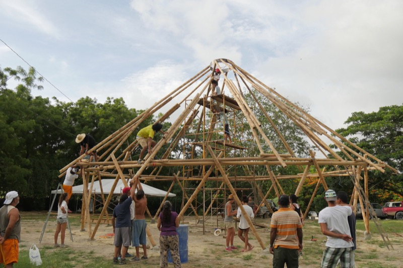
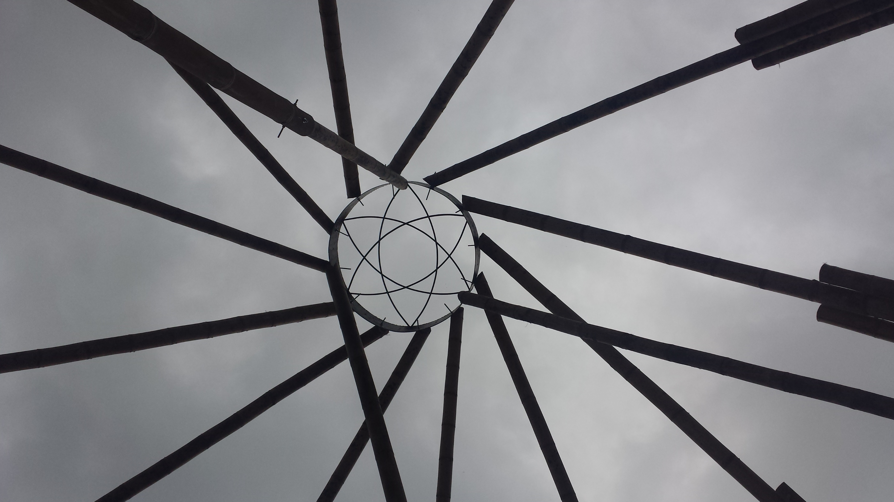
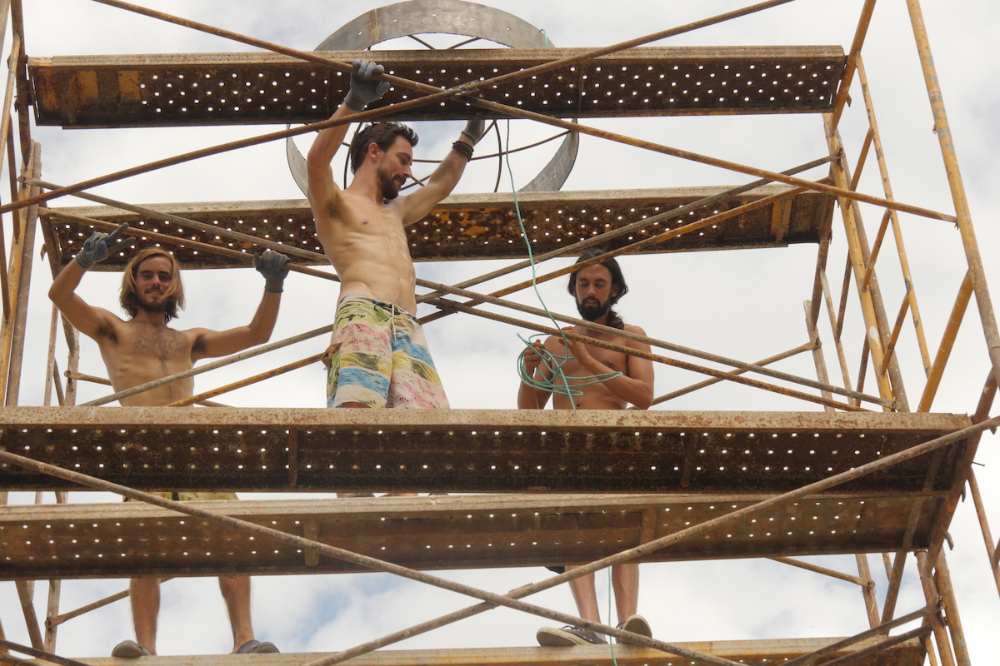
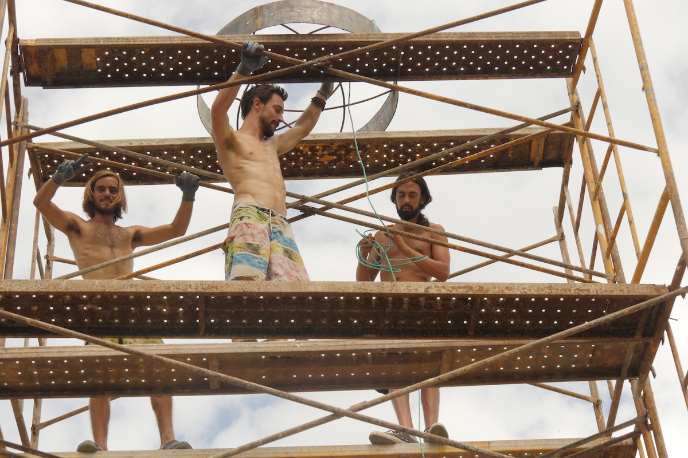

EVENTOS/TALLERES
NUESTROS TALLERES
Próximas fechas
TALLER DE DISEÑO PARTICIPATIVO PARA EL CENTRO COMUNITARIO DE RAMBUCHE ENERO 28, 29
TALLER DE BIOCONSTRUCCIÓN EN CAÑA GUADÚA,
Centro Comunitario Rambuche Febrero 25, 26, 27, 28, FERIADO DE CARNAVAL
FESTIVAL CACAO JAMACOAQUE TALLER DE BIOCONSTRUCCIÓN EN CAÑA GUADÚA,
Casa Prototipo para Reconstrucción TEMAZCALES, YOGA, RITUALES,CACAO, MÚSICA, ARTE, AMORFINO Abril 8 AL 15, FERIADO DE SEMANA SANTA
TALLER DE BIOCONSTRUCCIÓN EN CAÑA GUADÚA CENTRO COMUNITARIO DE RAMBUCHE Febrero 25, 26, 27, 28, FERIADO DE CARNAVAL Jama, Manabí Maloca - centro comunitario - casa de pensamiento ESPACIO DE LA CREACIÓN COLECTIVA
CON TU INSCRIPCIÓN, APRENDES Y APOYAS A QUE MUCHAS FAMILIAS TENGAN LA OPORTUNIDAD DE RESTAURAR SU MEDIO DE VIDA AGRÍCOLA DE MANERA SUSTENTABLE Y RECONSTRUYAN HOGARES RESILIENTES
 


IMPARTIDO POR: CARLOS ROJAS
Arquitecto, especialista en construcción con Bambú, Magister en planificación comunitaria, diseñador y fundador de la Ecoaldea Aldeafeliz (Llevada por la Global Ecovillage Network como ejemplo por Colombia ante la cumbre COP21), diseñador del proyecto Ecobarrios de Bogotá, co-creador del Consejo de Asentamientos Sustentables de las Américas, profesor de Sociocracia y liderazgo participativo y diseñador de Villa permacultural Mahia, primera agrupación de vivienda rural 100% ecológica y autosustentable en Colombia Reconstrucción regenerativa del Hábitat en Ecuador
El taller de construcción de una Maloca para Centro Comunitario con bambú tiene como objetivo brindar todos los elementos técnicos y principios constructivos para que los asistentes puedan luego replicar, acondicionar y llevar a cabo este tipo de construcción en sus lugares, adaptando esta sencilla estructura a sus necesidades. Los asistentes pueden esperar obtener el conocimiento técnico básico que les permitirá emprender este tipo de construcciones ecológicas con seguridad estructural antisísmica y garantía de gran durabilidad en el tiempo para sus propios hogares o comunidades.
- 1. Características físicas, cultivo y cosecha.
- 2. Ventajas ecológicas y constructivas.
- 3. EL USO DEL MATERIAL
- 4. Inmunización y protección efectiva.
- 5. Cortes y uniones usadas en construcción.
- 6. Uso de herramientas y herramientas recomendadas.
CONTENIDO TEÓRICO
DISEÑO CON BAMBÚ
Conceptos básicos del diseño estructural con bambú.
- 1. Inmunización del bambú.
- 2. Diseño de una estructura básica usando conceptos de diseño.
- 3. Levantamiento de columnas, vigas y diagonales.
- 4. Levantamiento de una estructura de cubierta.
- 5. Uso de cada una de las herramientas recomendadas.
- 6. Pintura y protección final del bambú.
CONTENIDO PRÁCTICO
COSTO DE LA INSCRIPCIÓN: 325 USD
Inscripción temprana: 296 usd hasta 10 de febrero.
CUPO: 20 personas
Incluye el taller, alimentación con sazón manaba y alojamiento en carpa
FECHA ÚLTIMA DE PAGO Y CIERRE DE INSCRIPCIONES: 20 DE FEBRERO 2017
- PICHINCHA
- JOSE ZAMBRANO
- Cta Ahorros:
Reserva con 50% de depósito a cta:
Más info y recepciones: kawsaypasisa@gmail.com, +593 984662552
Requerimos esta inscripción temprana para asegurar los materiales y el trabajo previo que requiere la construcción en nivelaciones y adecuaciones.
TRASLADO Y ACOMODACIONES
Los inscritos deben llegar a Rambuche el día Viernes 24 de febrero, en la tarde o noche, para acomodarse y estar listos para el taller que inicia el sabado a las 7:00 am. Se puede llegar en automóvil o transporte público a Canoa y bajarse en la población de Rambuche a 15 minutos aprox hacia el sur de Jama. Entrar por camino de tierra en dirección este y continuar hasta Fundo La Paz donde Barón Cevallos.
El alojamiento se realizará en carpa, tendremos área de camping, baños y baños secos, duchas, y la alimentación será cocinada por mujeres de la comunidad con sazón y corazón manaba!!!
Debes traer tu carpa, aislante, sleeping, linterna, repelente, e implementos de limpieza biodegradables.
NUESTROS SERVICIOS
DISEÑO DE ASENTAMIENTO SUSTENTABLE
Diseñamos e implementamos asentamientos sustentables, estos pueden ser casas en espacios rurales o urbanos, fincas o incluso poblaciones. Facilitamos la cocreación del sueño, la planificación, ejecución y evaluación de proyectos personales, colectivos, institucionales o corporativos. Para esto contamos con aliados expertos en permacultura, bioconstrucción, facilitación- gestión social y economía solidaria.
TURISMO CONSCIENTE
Mushuk Allpa es una operadora de turismo consciente que tiene el objetivo de despertar en sus clientes el deseo de empezar una transición a una vida más saludable y coherente con todos los elementos y seres de este mundo. Nuestro propósito es educar al turista acerca de la riqueza cultural y biológica del Ecuador y sus rituales ancestrales y medicinales.
Visitamos lugares sagrados como selvas, montañas, lagunas, playas, comunidades indígenas y ecoaldeas en zonas de altisíma diversidad. Se pretende sensibilizar al viajero ante la realidad de un mundo cambiante. Aprendiendo acerca de historia natural, ecología tropical, antropología y permacultura queremos inspirarte y motivarte a ser parte de la tribu mundial de gente que ya vive un proceso de transición de una manera coherente con la naturaleza.